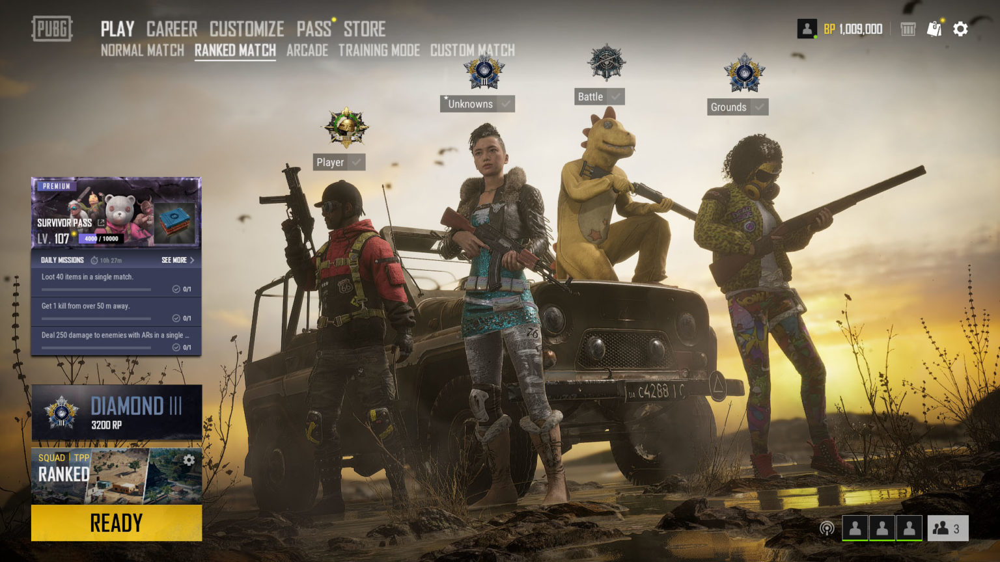
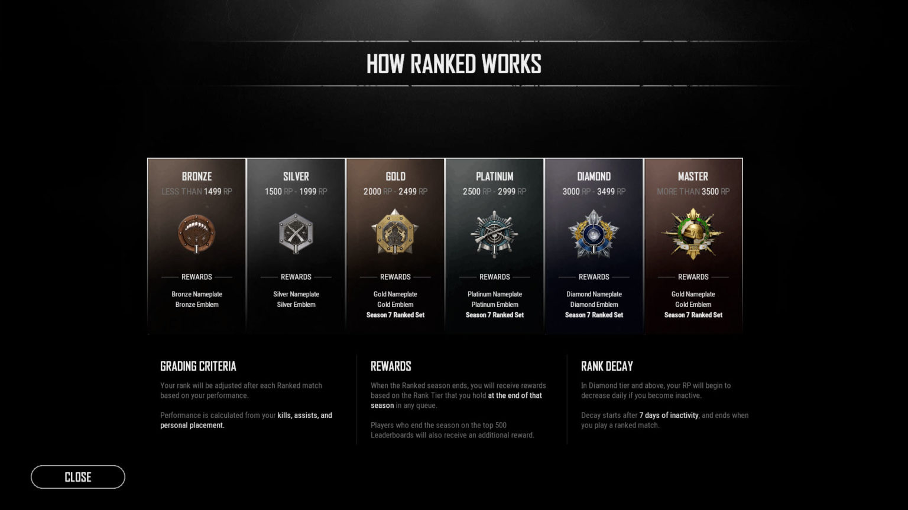
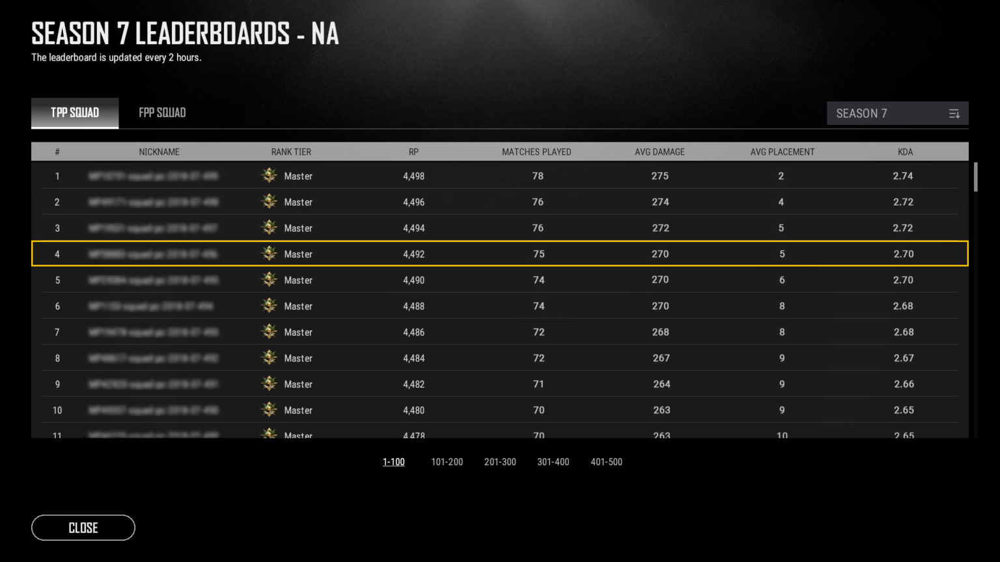

Update 7.2 has just hit live servers and brings with it PUBG’s long-awaited Ranked Mode. In Ranked Mode, up to 64 seasoned opponents battle it out in squad based combat to try and increase their Rank using a new competitive ruleset that puts more focus on loot and pacing. As you complete ranked matches, your Rank Points will rise and fall depending on your performance, which will move your Rank and Tier in turn. Reach at least Gold V and you’ll be rewarded with some exclusive skins at the end of the season!
Also in this update is this season’s balance pass, which makes shotguns a little more reliable, lowers the power variance between some ARs, and brings some quality of life improvements to vests. Unfortunately, due to a usability issue, we’ve had to postpone the planned Gas Can improvements to a later date. We’ll keep you updated once we have a better idea of when to expect it.
Update 7.2 is live, so read on for all the changes!
What's New?
Update 7.2 is now available and brings with it weapon balance changes and the long-awaited Ranked Mode. With Ranked Mode, PUBG players can finally test their skills against the best players in the world, rising (and falling) through the ranks for great rewards and of course bragging rights.
This update also brings Bots to PC servers, which we know has been a controversial topic among the Community the last few weeks. Rest assured, we plan on making improvements to how bots currently work and most importantly, bots will NOT be in Ranked Mode games. To learn more about our intentions with Bots.
Ranked mode

Transition from Survival Title to Ranked
Survival Title has been discontinued. The new Ranked system will now replace it.
Unlike with Survival Title, only matches played in the new and separate Ranked mode will count towards your rank.
A player’s Rank will increase or decrease after each match based on their performance.
Legacy Survival Title season data will still be available to view in the Season navigation tab.
Matchmaking
A new ‘Ranked’ sub navigation option has been added to the ‘Play’ section of the primary navigation menu.
Options for Ranked play include TPP or FPP Squad modes.
1/2/3 man squad options are also available.
Matches will feature a maximum of 64 players.
Ranked matches will not have Bots.
There are additional requirements for starting a match in the Ranked queue. All squad members must meet these requirements in order to begin matchmaking.
A squad cannot enter the queue if two players (who have completed placements) are too far apart in rank from each other (10 divisions maximum).
Players need to reach a minimal Survival Mastery level of 20 before they qualify for ranked.
Depending on their platform and region, players may need to verify their account using SMS before they qualify for Ranked mode.If an SMS verified account is banned, the device connected to it will also be permanently blocked.
Players who have received ranked matchmaking penalties for actions such as repeatedly ‘dodging’ games after loading onto the island will need to wait out a matchmaking penalty timer before they can play ranked again.
Players may cancel Ranked matchmaking at any time with no penalty.
Players who find a match and load into the pregame lobby will face Ranked penalties if they then choose to abandon the match.
Ranked Mode Ruleset
Ranked mode games will be randomly played on Erangel, Miramar, or Sanhok.
Ranked mode will operate under its own game settings.
Unique Season 7 Ranked settings include:
Overall increase in item loot spawns
No M249, DBS and Crossbow spawns
No Spike trap spawns
Red zone has been removed
Motor glider has been removed
The timing and speed of the Blue Zone has been adjusted to increase the pace of play
Exact settings are subject to adjustment throughout the season and especially at the start of new seasons.
Changes in the ranked mode rule set will be posted via announcements
Tiers and Divisions

There are a total of 6 tiers in the Ranked system (Bronze, Silver, Gold, Platinum, Diamond, Master) with 5 Divisions (V – I) within each tier.
A player’s current rank is determined by their Rank Points (RP) in a given queue.
At the start of a Ranked season, players will be considered ‘Unranked’ in all queues.
The first 5 games they play in each ranked queue will count as placement matches.
At the end of the fifth placement match, players will be given an initial rank for the season.
How Climbing Works
After a player dies, they will receive an adjustment to their RP based on their performance. The metrics that determine performance are:
- Kills
- Assists
- Personal placement
When a player exits a Ranked match, they will be presented with a new pop-up modal celebration that shows the player their performance metrics as well as the change to their RP.
Players who are at Diamond rank or above will begin to face RP ‘decay’ if they do not play any Ranked games for a week or more in a row
Ranked Rewards
At the end of the season, players will receive Ranked rewards based on their Highest Ranked tier that season
Ranked rewards are unique and only obtainable by playing Ranked during the season they are awarded
All players will receive a nameplate and emblem recognizing their Tier
Players who ended the season at Gold or higher will receive a set of Ranked reward skins
Leaderboards

The Leaderboards have returned and have been updated to work with with Ranked mode
- Leaderboards now list the Top 500 players per server, sorted by RP
- The Leaderboard you see is for the region you’ve played the most Ranked matches in
- Leaderboard positions update every 4 hours
- Once a player enters the leaderboard, their region will be fixed for the rest of the season.
- Players who end the season on the Top 500 Leaderboards for any queue will receive a small additional reward to recognize the achievement
Bot Opponents
As happens with many games, we’ve seen the general skill level of our players grow significantly over the last 3 years. While PUBG veterans continue to hone their skills and improve, we’re seeing more often that many newer players are being eliminated early with no kills – and oftentimes with no damage dealt. You’ve been telling us for a while that the widening skill gap is creating a more and more challenging environment for some of our players and we’re now ready to talk about our plan to help this.
Bots will only appear in normal games and are designed to appear less as your skill increases, but we’re also aware of their current state and are looking at your feedback. We’ll be adjusting the balance, intelligence, and functionality of bots as time goes on.
The Ratio of bots in each match is dynamic.
- The ratio of bots in each match will change according to player skill and the matchmaking pool in each server.
Bots can only join Normal matchmaking games
- Players will not be placed on a team with bots and bots will not fill in the empty slots in your party.
Normal match with bots will start fresh with new MMR
Bots actions are limited
- Bots can perform basic actions such as walk/run/crouch/prone/shoot and are also capable of doing basic low height parkour, swimming, parachuting and looting.
Leaning, jumping, ledge grab, and the use of throwables will be added at a later date.
Achievements, trophies, missions, and Mastery can still be earned and completed
- Actions against bots are counted towards missions, Survival & Weapon Mastery, as well as platform achievements and trophies.
Bot spectate and Death Cam.
- Death Cams from the perspective of bots will be available, but they may look a little odd until we make our planned improvements.
- When a player is killed during a match, spectator is prioritized to remaining human players. However, if all players are eliminated, players can spectate bots.
For more info visit here